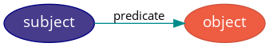
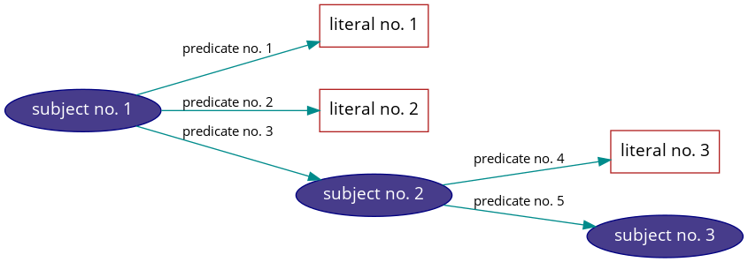
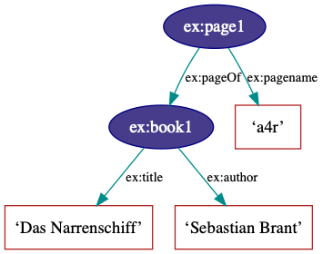

Introduction
Resource Description Framework (RDF)
Knora uses a hierarchy of ontologies based on the Resource Description Framework (RDF), RDF Schema (RDFS), and the Web Ontology Language (OWL). Both RDFS and OWL are expressed in RDF. RDF expresses information as a set of statements (called triples). A triple consists of a subject, a predicate, and an object:

The object may be either a literal value (such as a name or number) or another subject. Thus it is possible to create complex graphs that connect many subjects, like this:

In RDF, each subject and predicate has a unique, URL-like identifier called an Internationalized Resource Identifier (IRI). Within a given project, IRIs typically differ only in their last component (the “local part”), which is often the fragment following a # character. Such IRIs share a long “prefix”. In Turtle and similar formats for writing RDF, a short prefix label can be defined to represent the long prefix. Then an IRI can be written as a prefix label and a local part, separated by a colon (:). For example, if the “example” project’s long prefix is http://www.example.org/rdf#, and it contains subjects with IRIs like http://www.example.org/rdf#book, we can define the prefix label ex to represent the prefix label, and write prefixed names for IRIs:

Built-in Ontologies and User-Created Ontologies
To ensure the interoperability of data produced by different projects, each project must describe its data model by creating one or more ontologies that extend Knora’s built-in ontologies. The main built-in ontology in Knora is knora-base.
Shared Ontologies
Knora does not normally allow a project to use classes or properties defined in an ontology that belongs to another project. Each project must be free to change its own ontologies, but this is not possible if they have been used in ontologies or data created by other projects.
However, an ontology can be defined as shared, meaning that it can be used by multiple projects, and that its creators will not change it in ways that could affect other ontologies or data that are based on it. Specifically, in a shared ontology, existing classes and properties cannot safely be changed, but new ones can be added. (It is not even safe to add an optional cardinality to an existing class, because this could cause subclasses to violate the rule that a class cannot have a cardinality on property P as well as a cardinality on a subproperty of P; see Restrictions on Classes.)
A standardisation process for shared ontologies is planned (issue #523).
For more details about shared ontologies, see Shared Ontology IRIs.